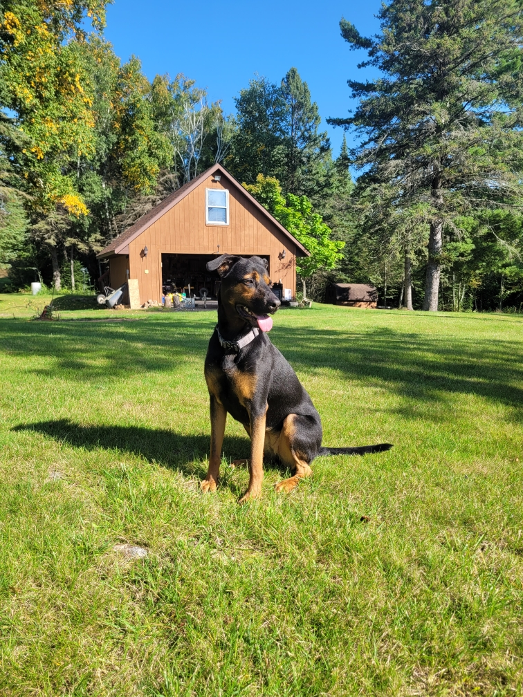
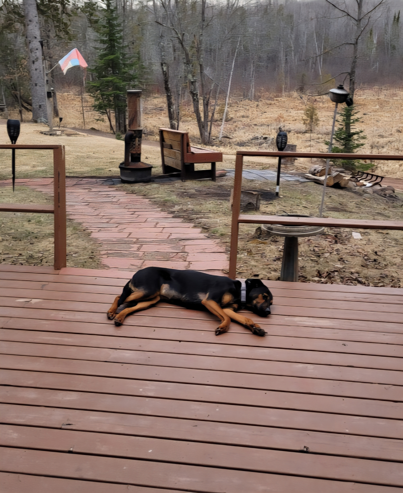

My Passions & Interests
Going to my family cabin


This cabin has been in my family for two generations and is located near Solon Springs, Wisconsin. I have been going to the cabin since I was a baby and it has always been a special place for my family. Every year for the past 4 years, my brother hosts a fourth of July party at the cabin and invites all of our family and friends. Going there is a great way to spend time with family and to enjoy the outdoors. I go there to walk my dog, Willow, and to relax.
Since the cabin is located in a more rural area, you have to make your own fun. Luckily, there are always plenty of things to work on at the cabin. Projects like cutting wood, cleaning the yard, and fixing things around the cabin are always on the to-do list. I enjoy working on these projects and being outside. It's a great way to disconnect from technology and enjoy nature.
Hangning out at my family's cabin has helped me seperate myself from the stresses of school and work. Being able to seperate yourself from the stresses from life is an important skill to have. This has helped me learn how to relax and enjoy the moment. Clearing my mind has helped me become more focused and productive when I return to school and work.
Traveling

Growing up my family didn't have many opportunities to travel. When we did, it was always to the same places and states. Once I graduated high school and was able to pay for my own trips, I started traveling more. While I still haven't been able to travel as much as I would like while being a student, I'm still looking forward to traveling more in the future and expanding my understanding of different cultures and places.
While traveling, I enjoy going on guided tours and going to museums. During my trip to Las Vegas, I went on a tour of the Hoover Dam and went to the National Atomic Testing Museum. Each state and city has its own history and culture that I love learning about. Exploring new places and what they have to offer is one thing I love about traveling.
Traveling puts you out of your comfort zone and allows you to experience new perspectives. It has helped me become more adaptable and open-minded, which are important skills in both life and my future career. In the future, I hope to travel internationally and experience different cultures around the world. I also want to explore more of the United States and visit national parks and historical sites.